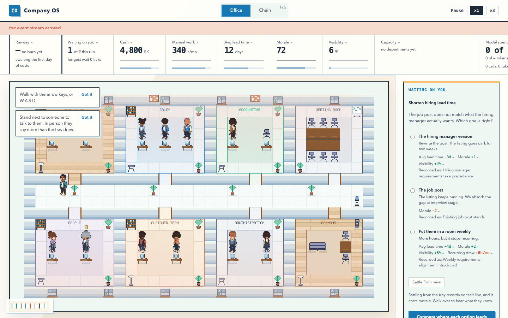
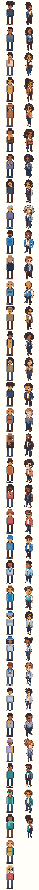

A lit office, and chrome that gets out of its way.
Company OS is a bright contemporary workplace, not a night-shift control room. The office and the people in it are the first thing the eye lands on; the metrics explain their situation without replacing them.
This specimen replaces the ink one. Every value below is the value in
frontend/src/design/tokens.ts, and frontend/tests/chrome.test.ts
reads that file and the stylesheet and asserts they agree — so a swatch here that has drifted
from the product is a failing test rather than a stale document.
The ground, and what is measured against it
象牙白 is the product ground and the reference every contrast rule uses. Nothing in the product is brighter, which matters more than it sounds: if something were, every readability claim in the palette would be measuring against the wrong thing.
| Slot | Value | Role | Against the ground |
|---|---|---|---|
| 象牙白 | #fffef8 | Product ground | — |
| 月白, lifted | #f7fbf9 | A card | 1.0 |
| 粉白 | #fbf2e3 | Warm quiet bands | 1.1 |
| 月白 | #eef7f2 | Cool quiet surfaces | 1.1 |
| 远天蓝, lifted | #dfeaef | Tracks, hover, inactive fills | 1.3 |
| 远天蓝 | #c3d5de | Hairlines | 1.6 |
Text and structure
| Slot | Value | Role | Ratio |
|---|---|---|---|
| 鸽蓝 | #1c2938 | Primary text, strong borders | 15.0 |
| 鸽蓝, art | #253147 | Character outlines, structural edges | 12.7 |
| — | #2d3d52 | Glyph structure, decision pressure | 10.9 |
| 鲸鱼灰 | #475164 | Secondary text and structure | 7.5 |
| 鲸鱼灰, lifted | #5c677a | Small labels | 5.7 |
| 星蓝, deepened | #4a6b85 | Secondary labels, inactive states | 5.6 |
Two dove blues, on purpose. #1c2938 is the text ink the Product Contract
names; #253147 is the art ink VISUAL_DESIGN.md §2 names, and all 33
approved character candidates are already drawn with it. They answer to different documents
and one of them is in shipped pixels, so they are separate slots rather than a variant.
One cool accent per surface, and they are not the same one
The Product Contract gives 天蓝 to "primary action and player emphasis". VISUAL_DESIGN.md
and the shipped candidate art give the CEO 石绿. Both are right about their own surface, and the
role divides rather than one of them losing.
#1677b3
The chrome's action, selection and focus. Clears 4.9:1 against ivory, which 石绿 cannot —
a control wearing 石绿 would be a control nobody can read.
#57c3c2
The player, inside the office, and nothing in the interface. It cannot be 天蓝 because the
sales room and everyone in it already wear 花青, and the CEO would read as a sales hire.
Neither surface has two cool accents, so "the player is the strongest cool accent" survives
intact where it is actually looked at. The CEO's clothing is #2f8c8b, 石绿 deepened
— the value their own candidates carry.
The one reserved signal, and the edge it cannot appear without
决策琥珀 #f2c46b means one thing: a person is waiting on your decision.
Not a work item's status, not a warning, not ambient telemetry. The product has exactly one
signal that pulls the eye and its value comes from being the only one.
On ink the amber was the brightest thing on screen. On ivory it measures 1.6:1 — nearly
invisible. So the reserved signal is a pair: the amber carries the meaning and
#1c2938 carries the contrast, the same way the office's sprites take their
separation from a dove-blue outline rather than from their fill. Spending the amber without
the edge is how the one signal that must not be missed becomes the one signal nobody sees.
It appears in exactly three shapes: the dot beside a waiting person, the conversation open on one of them, and the tray holding the queue. The suite reads the stylesheet and fails on a fourth.
The load ramp, re-derived rather than re-tinted
On ink the middle steps were chosen to be dark enough not to read as amber. On ivory that reasoning inverts: a desaturated mid-green disappears into the surface instead of reading as strain. The ramp now deepens as load rises, gaining contrast against the ground at every step.
What did not change is the constraint. A naive green-to-red interpolation runs through yellow, and a department at two-thirds load would look like a person waiting. No stop sits in the beam's confusable band — close in hue and close in lightness. The last two stops are warm by necessity, because strain has to end in red, and what keeps them unmistakable is that they are dark: a brick red at a tenth of the beam's luminance reads as alarm, never as amber.
Departments: a stripe in the panels, a rug on the floor
A department used to be a saturated dark slab covering a whole room, which is why the office read as seven coloured caves. It arrives through a border course and an inset rug now — both lines and shapes rather than fields — and the rug is also what keeps the walkable middle of each room clear.
| Department | Stripe | Floor |
|---|---|---|
| Executive, lounge | 土色 #8a5a34 | warm timber |
| Sales | 花青 #2376b7 | cool light |
| Accounting | 竹绿 #189c7b | 月白 |
| Meeting, administration | 鲸鱼灰 #475164 | neutral light |
| People | 落电紫 #74759b | violet tint |
| Support | 火泥棕 #aa6a4c | 粉白 |
The stripes are chrome-strength because they are the only thing distinguishing one team from another in the panels; the floors are deliberately pale because a floor is a ground, not a state. The two lists are the same departments answered for opposite jobs, which is why they are two tables and not one.
The office, at the size the criteria name

npm run verify. Above 1400 the panels move to a rail and
the stage claims the height; below it they stack and the office holds a band tall enough for
the whole floor. Both bounds are load-bearing — a shorter band crops the room and a taller
one takes the zoom to 2, at which point a laptop sees half the office at twice the size.
Four depth bands
Bands 1 and 2 bake into one canvas once. Band 3 is the per-frame depth-sorted pass. Band 4 is
DOM. What is not here is the vignette — a 34% black radial over the whole floor, and
the single thing that most made this product read as a control room. Nothing replaced it: light
now comes from the glazing and falls off over six tiles, as a warm colour at low alpha rather
than an additive blend, because on a near-white floor lighter goes straight to
white and the floor stops existing.
The cast: one rig, thirty-three skins

docs/assets/company-os-visual-redesign/verification/cast-contact-sheet.png.
A person is one authored body — three views by four frames, at 48×64 — wearing hair, an outfit and at most one accessory, resolved against six colours read out of that person's candidate rather than transcribed from it. The eleventh identity is the CEO; anyone the casting board never met gets the same rig with a manifest derived from their id, which is what makes a background coworker the same game rather than a similar one.
side, at composition time — two profiles kept identical by hand drift.Silhouette is the channel that survives distance, so no two of the eleven share one. That is enforced against the composed outline rather than against the feature indices behind it — five of the six accessories draw inside the body, and two different hair shapes can occupy the same pixels, so any cheaper key declares two identical people distinct.
Movement
Four frames: standing, and a three-frame stride cycled contact–pass–contact–pass. The frame is keyed to distance travelled, not to elapsed ticks — the CEO covers a tile in about seven ticks and staff take about thirteen, so one cadence for both left one of them skating.
The camera follows the player with a dead zone, translates by whole logical pixels before the integer zoom, and clamps to the building. On a laptop the office is narrower than the stage, so it centres horizontally and follows only vertically; a camera that followed anyway would slide a floor with room to spare from side to side as the player walked.
What the suites hold
| Claim | Held by |
|---|---|
| The stylesheet and the token module agree | tests/chrome.test.ts |
| Text, actions and stripes clear their contrast thresholds | tests/tokens.test.ts |
| No ramp stop is mistakable for the beam | tests/tokens.test.ts |
| The beam is spent once, and never without its edge | tests/chrome.test.ts, tests/visual.test.ts |
| The office lays down no dark field | tests/visual.test.ts |
| Geometry did not move when the tile doubled | tests/world.test.ts |
| Art round-trips PNG → grid exactly, or fails naming the pixel | tests/cast.test.ts |
| No two of the eleven share a silhouette | tests/visual.test.ts |
| No command carries an appearance | tests/cast.test.ts |
| The camera keeps the player on screen at every width | tests/camera.test.ts |
Sources: docs/plans/2026-08-16-1527-feat-company-os-visual-redesign-plan.md (the
Product Contract), docs/plans/2026-08-16-002-feat-daylight-pixel-visual-system-plan.md
(how it landed), VISUAL_DESIGN.md (the rendering specification), and
Zhongguose for the palette's names.